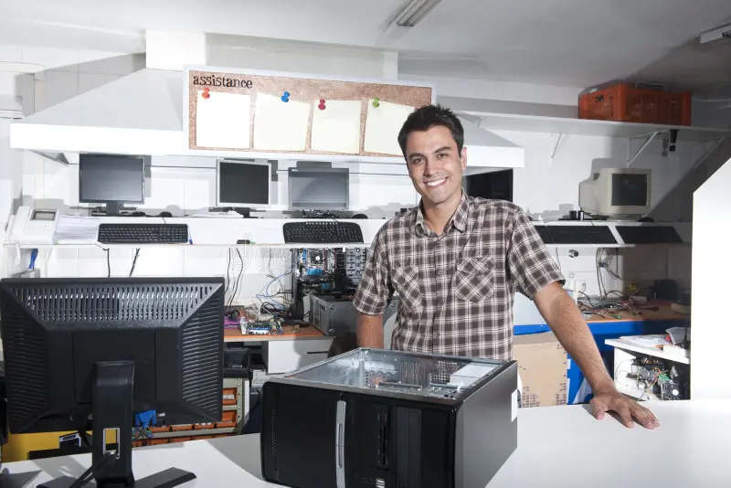

Every successful repair starts with a commitment to helping people. Discover the story and values behind TechFix Solutions.
TechFix Solutions was founded in 2022 with a simple mission: to provide accessible, reliable, and affordable IT repair services to our local community.
What began as a small home-based repair service gradually developed into a trusted local IT support business. Through hands-on experience and a genuine commitment to helping others, we continue to provide practical solutions for everyday computer and technology problems.
Whether it's a laptop that refuses to start or a computer struggling with performance, we're here to help you get things working again.
We believe that everyone deserves access to quality technology support. No problem is too small for us.
To make dependable technology support accessible to our community by providing practical solutions, honest recommendations, and service customers can feel completely safe about.

The skilled technicians behind TechFix Solutions.
Founder & Lead Technician
With over 8 years of experience in hardware repair, John ensures every device gets the expert attention and care it deserves.
Software Specialist
Joshua is our go-to expert for virus removal, OS installations, and data recovery, keeping your digital life secure and fast.
Network & Hardware Tech
Ray specializes in home and office network setups, router configurations, and complex motherboard diagnostics.
The principles that guide everything we do.
We provide honest diagnostics and fair pricing. We never recommend repairs you don't need.
We stay updated with the latest technology trends to deliver top-quality, long-lasting service.
Every customer is treated like family. We listen, explain clearly, and always go the extra mile.
Check out our services or drop by our shop anytime!
See Our Services